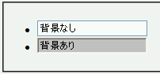

input要素やtextarea要素に背景を指定すると、WindowsXP以降で実装された視覚スタイルによる装飾が無効になりクラシックスタイルの装飾（Win2000/9xと同じ装飾）になってしまう。
<form> <ul><li> <input type="text" style="width:10em;" value="背景なし"> </li><li> <input type="text" style="width:10em; background:silver;" value="背景あり"> </li></ul> </form>
2つの入力ボックスを設置しています。前者は背景指定なし、後者は背景指定ありの場合です。
WinIE6.0標準モード
この不具合は入力ボックス（input, textarea）、チェックボックス（input）、ラジオボタン（input）、押しボタン（input, button）の各フォーム部品とfieldset要素のデフォルトのボーダーで発生します。セレクトボックスでは発生しないようです。
WinIE6.0（WindowsXP）で不具合の発生を確認しました。